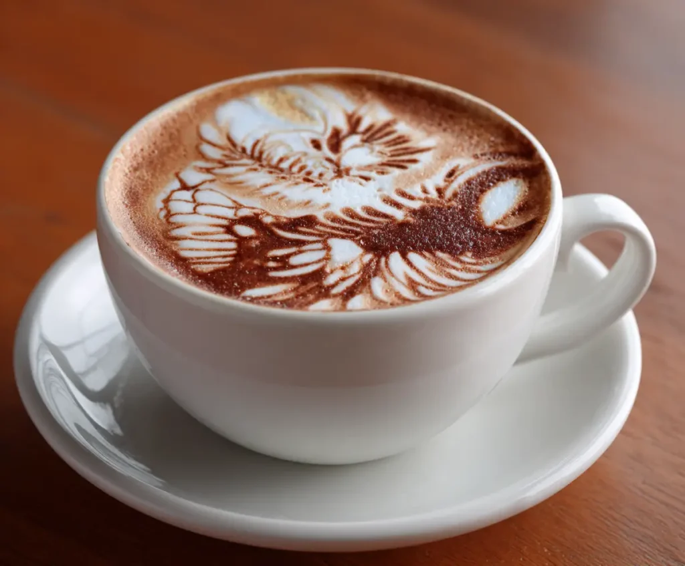

Tentang Kami
Kopi Ricky adalah kedai kopi sederhana yang menyajikan kopi pilihan dari berbagai daerah di Indonesia. Kami percaya secangkir kopi yang baik bisa membuat hari lebih hangat.
Sejarah Kami
Perjalanan Kopi Ricky dari sebuah gerobak kecil hingga menjadi kedai yang hangat.
2018
Berawal dari Gerobak Kecil
Ricky mulai menjual kopi susu dari sebuah gerobak sederhana, dengan biji kopi pilihan dari petani lokal.
2020
Membuka Kedai Pertama
Setelah dikenal pelanggan setia, Kopi Ricky membuka kedai pertama di Jl. LA Jepang dengan suasana yang hangat dan nyaman.
2024
Menu dari Berbagai Daerah
Menu diperluas dengan kopi dari berbagai daerah di Indonesia, tanpa meninggalkan kesederhanaan yang menjadi ciri kami.
Menu Favorit
Beberapa menu yang paling sering dipesan pelanggan kami.

Kopi Susu
Perpaduan espresso dan susu segar.
Americano
Espresso dengan air panas, rasa ringan dan bersih.

Cappuccino
Espresso dengan susu dan busa lembut.